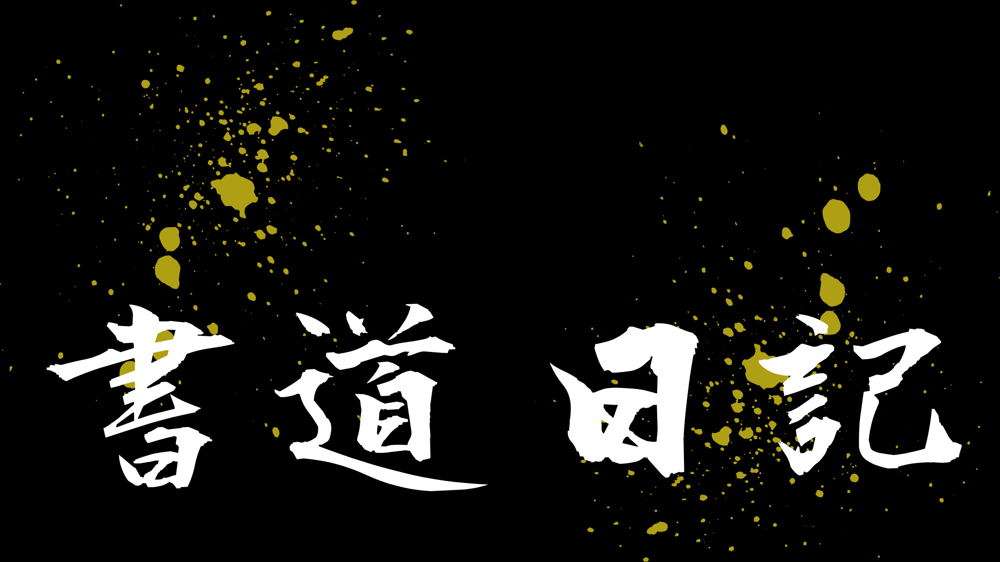

未来にむけての書道練習日記へようこそ
このサイトでは、私自身の書道をパワーアップさせるとともに、 書道の面白さを広めることを目的としています。
掲載する作品は毛筆だけでなく硬筆も含まれます。
字を書く機会が少なくなった現代で、書のすばらしさに触れてみませんか？
| 書道日記 | 未来の日記 | お手本一覧 |
書道日記
ここでは自分で選んだお題やリクエストに応えて、毛筆と硬筆の書道作品の掲載をしています。
更新は不定期に行っています。
未来の日記
私自身の作品について、書道についての小話をゆるくするブログです。
更新は毎週日曜日に行っています。
お手本一覧
掲載した作品のお手本を、作品の更新に伴って載せています。
更新は作品の掲載に伴って行っています。
お知らせ
- ブログ更新しました。
- ブログ更新しました。
- 作品更新しました。
- 作品更新しました。